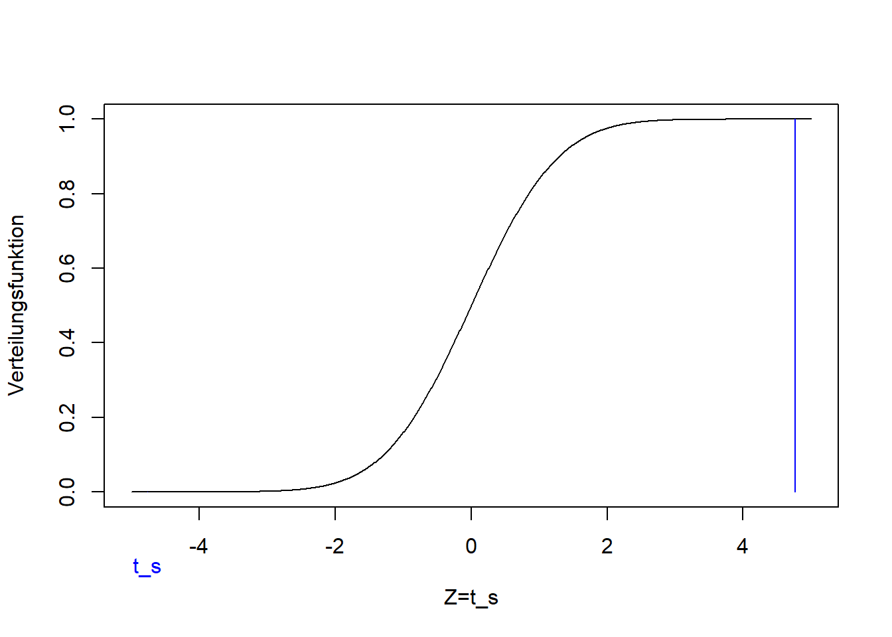
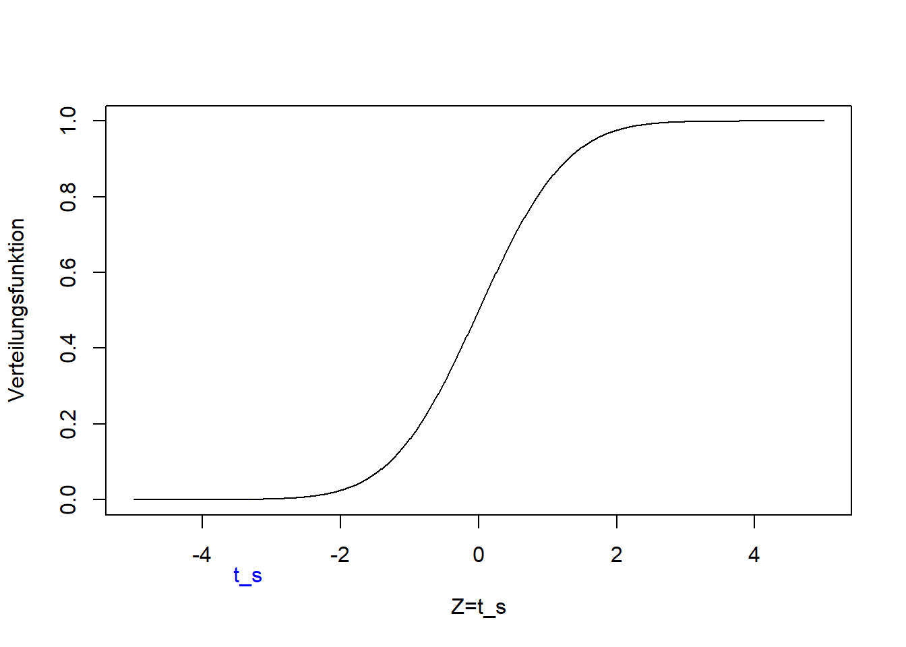
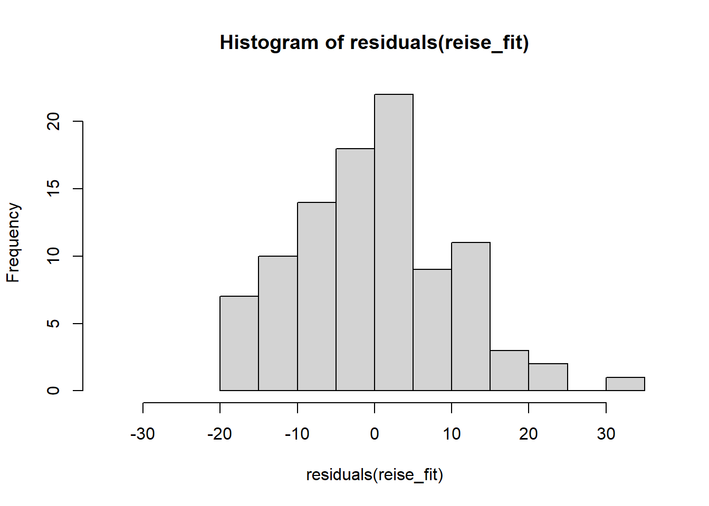
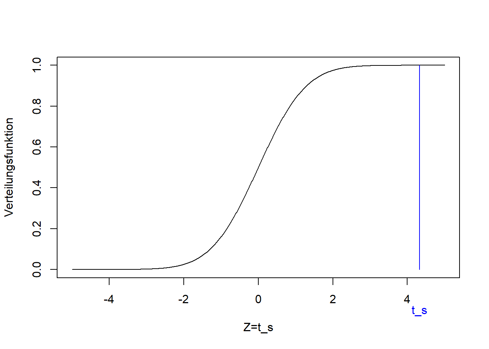
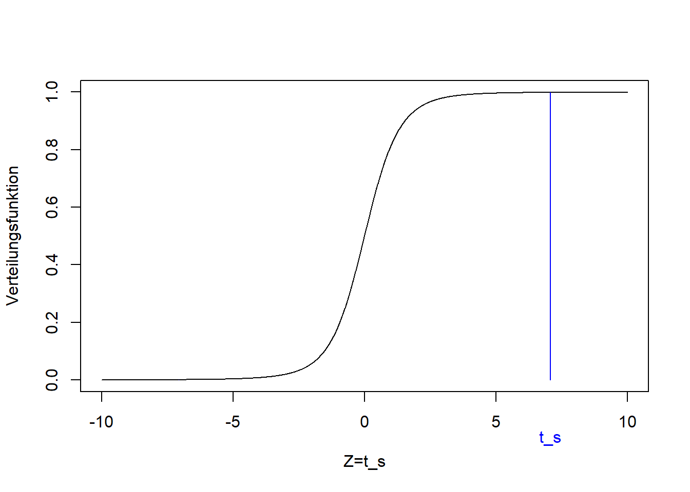
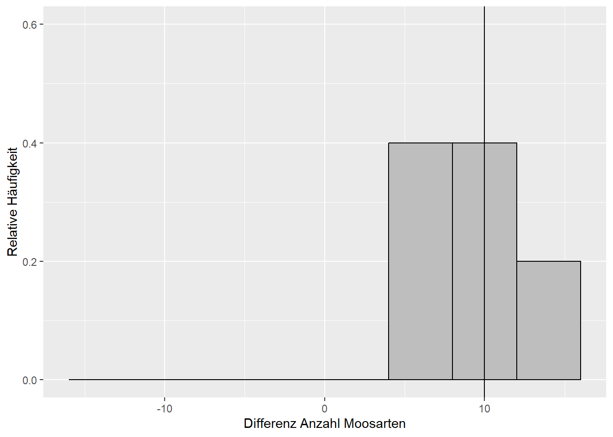

Kapitel 9 Statistische Tests
Wie wir in Kapitel 8 gelernt haben geht es in der schließenden Statistik um die Verdichtung der Informationen in einer Stichprobe in Form von Stichprobenfunktionen, mit denen wir bestimmte Parameter der Grundgesamtheit schätzen (vgl. Mittag (2016), Abb. 14.1, S. 212). Während es sich im Fall von Verteilungsparametern bei den Stichprobenfunktionen v.a. um den Mittelwert und die Standardabweichung handelt, sind die Stichprobenfunktionen im Fall von statistischen Tests sogenannte Teststatistiken, die die Informationen in der Stichprobe verdichten.
Wir werden das vorliegende Kapitel über die nächsten drei Wochen lesen. Dabei werden wir anhand der folgenden neun Beispiele vier verschiedene Tests kennenlernen:
- Beispiel 1: Laut dieser Umfrage hält jeder zweite Berufspendler eine durchschnittliche Fahrtzeit von bis zu 60 min pro Strecke für akzeptabel. Im Wintersemester 2019/20 haben wir die Anreisezeiten der Studierenden dieses Kurses abgefragt.10 Ein Histogramm dieser Stichprobe sehen Sie in Abbildung 9.1. Ist der mit dem Stichprobenmittel \(\bar x=50.8\) geschätzte Mittelwert \(\mu\) der Grundgesamtheit kleiner als der Vergleichswert \(\mu_0=60\) aus der Studie? Beziehungsweise, ist der Unterschied statistisch signifikant, wenn wir die Streuung der Stichprobe berücksichtigen? Die Frage “kleiner als” wenn es um einen Mittelwert geht beantwortet der sogenannte linksseitige Einstichproben-t-Test (Kapitel 9.2.1).
Abbildung 9.1: Histogramm des Merkmals “Anreisezeit” der Reisedaten aus dem Wintersemester 2019/20. Die vertikale Linie markiert den Mittelwert von 50.8 min.
- Beispiel 2: Ist der mit dem Stichprobenmittel \(\bar x=50.8\) geschätzte Mittelwert \(\mu\) der Grundgesamtheit ungleich dem Vergleichswert \(\mu_0=60\) aus der Studie? Wenn wir die Frage so formulieren brauchen wir einen sogenannten zweiseitigen Einstichproben-t-Test (Kapitel 9.2.1).
- Beispiel 3: Laut derselben Umfrage nehmen 21% der Pendler eine Fahrtzeit zwischen 30 und 45 min in Kauf. Ist der mit dem Stichprobenmittel \(\bar x=50.8\) geschätzte Mittelwert \(\mu\) der Grundgesamtheit größer als der Vergleichswert \(\mu_0=45\) aus der Studie? Beziehungsweise, ist der Unterschied statistisch signifikant, wenn wir die Streuung der Stichprobe berücksichtigen? Die Frage “größer als” beantwortet der rechtsseitige Einstichproben-t-Test (Kapitel 9.2.1).11
- Beispiel 4: Die Stichprobe wurde zufällig geteilt (Abbildung 9.2). Sind die mit den neuen Stichprobenmitteln \(\bar x_1=50.4\) und \(\bar x_2=51.2\) geschätzten Mittelwerte \(\mu_1\) und \(\mu_2\) ungleich? Beziehungsweise, können wir statistisch nachvollziehen, dass die beiden Stichproben Grundgesamtheiten mit dem selben Mittelwert entstammen? Diese Frage beantwortet der sogenannte Zweistichproben-t-Test (zweiseitig) (Kapitel 9.2.2).
Abbildung 9.2: Histogramme des Merkmals “Anreisezeit” der Reisedaten aus dem Wintersemester 2019/20. Die Stichprobe wurde zufällig geteilt. Die vertikalen Linien markieren die Mittelwerte \(\bar x_1=50.4\) (links) und \(\bar x_2=51.2\) (rechts). Die Varianzen sind \(s_1^2=352\) und \(s_2^2=384\).
- Beispiel 5 (Dormann 2013): Auf den Nord- und Südseiten einer Stichprobe von Bäumen wurde jeweils die Anzahl Moosarten bestimmt (Abbildung 9.3). Ist die Anzahl Moosarten auf der Nord- und Südseite derselben Bäume unterschiedlich? Dafür brauchen wir den gepaarten Zweistichproben-t-Test (zweiseitig) (Kapitel 9.2.4).
Abbildung 9.3: Verteilung der Anzahl Moosarten auf der Südseite (links) und Nordseite (rechts) derselben Bäume. Daten aus: Dormann (2013).
- Beispiel 6: Zurück zu den beiden neuen Stichproben aus Beispiel 4 (Abbildung 9.2). Ist die Varianz \(\sigma_2^2\) (gegeben \(s_2^2=384\)) größer als die Varianz \(\sigma_1^2\) (gegeben \(s_1^2=352\))? Beziehungsweise, können wir statistisch nachvollziehen, dass die beiden Stichproben Grundgesamtheiten mit derselben Varianz entstammen? Diese Frage beantwortet der sogenannte F-Test (rechtsseitig) (Kapitel 9.4).
- Beispiel 7: Entstammt die Stichprobe der Reisezeit (Abbildung 9.1) einer normalverteilten Grundgesamtheit? Die Parameter dieser Normalverteilung werden anhand der Stichprobe geschätzt. Diese Frage beantwortet der sogenannte Einstichproben-Kolmogorow-Smirnow-Test (Kapitel 9.5).
- Beispiel 8: Entstammen die beiden Teilstichproben der Reisezeit (Abbildung 9.2) einer gemeinsamen Verteilung? Beziehungsweise, können wir das statistisch nachvollziehen? Dafür brauchen wir den Zweistichproben-Kolmogorow-Smirnow-Test (Kapitel 9.5).
- Beispiel 9: Zurück zum Volksentscheid Tegel aus Kapitel 5. Gibt es einen Zusammenhang zwischen “Bezirk” und “Votum” beim Volksentscheid Tegel? Beziehungsweise, ist der geringe Zusammenhang, den wir bereits festgestellt haben, statistisch signifikant? Diese Frage beantwortet der sogenannte Chi-Quadrat-Test (Kapitel 9.6).
9.1 Grundprinzipien statistischer Tests
Die folgenden Prinzipien liegen allen statistischen Tests zugrunde, wobei wir vieles am Beispiel des t-Tests demonstrieren, der dann in Kapitel 9.2 vollständig behandelt wird.
9.1.1 Nullhypothese und Alternativhypothese
Das Formulieren von Hypothesen ist die formale Vorgehensweise, Fragestellungen wie die oben genannten Beispiele statistisch zu übersetzen.
Bsp. 3: Ist \(\mu\) (gegeben \(\bar x=50.8\)) größer als \(\mu_0=45\)?
Jeder statistische Test verlangt eine bestimmte Nullhypothese \(H_0\).
Bsp. 3: \(H_0: \mu\leq\mu_0\)
Diese wird getestet. Die Alternativhypothese \(H_1\) ist aber die, die sich zunächst aus den Zahlenwerten ergibt.
Bsp. 3: \(H_1: \mu>\mu_0\)
Hypothesen können nur abgelehnt (falsifiziert) werden. Das Annehmen von Hypothesen gilt nur bis auf weiteres.
9.1.2 Zweiseitig und einseitig
Wir unterscheiden zweiseitige und einseitige Tests. Bei zweiseitigen Tests wird auf ungleich/gleich getestet.
Bsp. 2: Ist \(\mu\) (gegeben \(\bar x=50.8\)) ungleich \(\mu_0=60\)?
Bei einseitigen Tests wird auf kleiner/nicht kleiner oder größer/nicht größer getestet.
Bsp. 1: Ist \(\mu\) (gegeben \(\bar x=50.8\)) kleiner als \(\mu_0=60\)?
Ein einseitiger Test ist in der Regel aussagekräftiger. Die Ergebnisse beider Tests lassen sich aber einfach ineinander überführen - wie wir noch sehen werden.
9.1.3 Die Teststatistik
Jeder Test hat eine bestimmte Teststatistik (Prüfwert) von der wir wissen, wie sie verteilt ist (unter bestimmten Annahmen), falls die Nullhypothese wahr ist. Die Teststatistik eines Einstichproben-t-Tests beispielsweise ist: \[\begin{equation} t_s=\frac{\hat\mu-\mu_0}{s_{\hat\mu}}\sim t_{n-1} \tag{9.1} \end{equation}\]
\(\hat\mu\) ist der Mittelwertschätzer; in Bsp. 1 \(\hat\mu=\bar x=50.8\). \(\mu_0\) ist der Wert, mit dem wir den Schätzer vergleichen; in Bsp. 1 \(\mu_0=60\). \(s_{\hat\mu}\) ist der Standardfehler des Mittelwertschätzers. Ist die Grundgesamtheit normalverteilt, dann ist der so standardisierte Schätzer des Mittelwertes (die Teststatistik \(t_s\)) bei wiederholtem Stichprobenziehen t-verteilt mit \(n-1\) Freiheitsgraden (vgl. Kapitel 8).12
9.1.4 Was genau getestet wird
Wenn die Teststatistik nahe dem Zentrum der Verteilung ist, die unter der Nullhypothese zu erwarten ist, d.h. in einem Bereich hoher Wahrscheinlichkeit, dann lehnen wir die Nullhypothese nicht ab. In Abbildung 9.4 ist das für die Teststatistik \(t_s\) in blau und die t-Verteilung dargestellt. Im Bsp. 2 würden wir in so einem Fall bis auf weiteres schließen, dass \(\mu\) (gegeben \(\bar x=50.8\)) gleich \(\mu_0=60\) ist.
Ist die Teststatistik dagegen in den Extremen der Verteilung, d.h. in einem Bereich geringer Wahrscheinlichkeit, dann lehnen wir die Nullhypothese ab. In Abbildung 9.4 ist das mit den roten Pfeilen verdeutlicht. Im Bsp. 2 würden wir in so einem Fall schließen, dass \(\mu\) (gegeben \(\bar x=50.8\)) ungleich \(\mu_0=60\) ist. Das ist in dem Beispiel tatsächlich das Ergebnis - wie wir noch sehen werden.
![Grundprinzip des statistischen Testens, hier dargestellt für einen konstruierten t-Test: Verteilungsfunktion der t-Verteilung mit 97 Freiheitsgraden, mit Teststatistik $t_s$ (blau) im Zentrum der Verteilung, d.h. im Bereich hoher Wahrscheinlichkeit unter der Nullhypothese. Wir lehnen die Nullhypothese _nicht_ ab. Wäre die Teststatistik dagegen in den Extremen der Verteilung (mit roten Pfeilen verdeutlicht), wäre sie im Bereich geringer Wahrscheinlichkeit unter der Nullhypothese. In dem Fall lehnen wir die Nulhypothese ab.](eids_files/figure-html/testprinzip-1.png)
Abbildung 9.4: Grundprinzip des statistischen Testens, hier dargestellt für einen konstruierten t-Test: Verteilungsfunktion der t-Verteilung mit 97 Freiheitsgraden, mit Teststatistik \(t_s\) (blau) im Zentrum der Verteilung, d.h. im Bereich hoher Wahrscheinlichkeit unter der Nullhypothese. Wir lehnen die Nullhypothese nicht ab. Wäre die Teststatistik dagegen in den Extremen der Verteilung (mit roten Pfeilen verdeutlicht), wäre sie im Bereich geringer Wahrscheinlichkeit unter der Nullhypothese. In dem Fall lehnen wir die Nulhypothese ab.
Beachte: Bei der zweiseitigen Version des Tests schauen wir auf beiden Seiten der Verteilung (beide Extreme), während wir bei dem linksseitigen Test nur auf die linke und bei dem rechtsseitigen Test nur auf die rechte Seite schauen. Auf der linken Seite von Abbildung 9.4 befinden wir uns mit der Teststatistik \(t_s\) wenn \(\hat\mu<\mu_0\), d.h. wir testen kleiner/nicht kleiner. Auf der rechten Seite befinden wir uns wenn \(\hat\mu>\mu_0\), d.h. wir testen größer/nicht größer.
9.2 t-Test (Vergleich von Mittelwerten)
Jetzt haben wir schon viel über den t-Test gehört; er ist dazu da, Mittelwerte zu vergleichen. Wenn wir den Mittelwert einer Stichprobe gegen einen Vergleichswert testen dann ist das der Einstichproben-t-Test. Wenn wir die Mittelwerte zweier Stichproben vergleichen dann ist das der Zweistichproben-t-Test. Wenn die beiden Stichproben gepaart sind, d.h. wenn die Merkmalswerte jeweils für die selbe statistische Einheit erhoben wurden, dann spricht man vom gepaarten Zweistichproben-t-Test. Die Teststatistik ist in allen diesen Fällen ähnlich. Schauen wir uns nun die Varianten des t-Tests anhand der Beispiele an.
9.2.1 Einstichproben-t-Test
9.2.1.1 Beispiel 1 (linksseitiger Einstichproben-t-Test)
Siehe Abbildung 9.1:
Ist der mit dem Stichprobenmittel \(\bar x=50.8\) geschätzte Mittelwert \(\mu\) der Grundgesamtheit kleiner als der Vergleichswert \(\mu_0=60\)? Beziehungsweise, ist der Unterschied statistisch signifikant, wenn wir die Streuung der Stichprobe berücksichtigen?
Die Nullhypothese ist in diesem Fall, dass der Mittelwert größer oder gleich dem Vergleichswert ist: \[H_0:\mu\geq\mu_0\] Die Alternativhypothese ist, dass der Mittelwert kleiner als der Vergleichswert ist: \[H_1:\mu<\mu_0\]
Die Alternativhypothese ergibt sich wie gesagt aus den Zahlenwerten der Stichprobe, deren Mittelwert tatsächlich kleiner is als \(\mu_0=60\). Wir hoffen, die Alternativhypothese zu bestätigen indem wir die Nullhypothese ablehnen. Die vorliegende Formulierung der Hypothesen ist der linksseitige Test. Die Teststatistik (Formel (9.1)) rechnen wir anhand der Stichprobe wie folgt aus (vgl. Kapitel 8): \[t_s=\frac{\hat\mu-\mu_0}{s_{\hat\mu}}\sim t_{n-1}\] \[t_s=\frac{\bar x-\mu_0}{s_{\bar x}}\sim t_{n-1}\] \[t_s=\frac{\bar x-\mu_0}{s}\cdot\sqrt{n}\sim t_{n-1}\]
Setzen wir die Zahlenwerte aus der Stichprobe ein (“reisedat19$t” enthält die Merkmalswerte für “Anreisezeit” aus dem Wintersemester 2019/20):
## [1] 50.81# Vergleichswert
mu0 <- 60
# Standardabweichung
# na.rm=TRUE ignoriert NAs
s <- sd(reisedat19$t, na.rm=TRUE)
s## [1] 19.11# Stichprobenumfang
# !is.na(reisedat19$t) verweist auf die Werte, die nicht NA sind
n <- length(reisedat19$t[!is.na(reisedat19$t)])
n## [1] 98## [1] -4.764Dieser Wert der Teststatistik liegt in den Extremen der t-Verteilung, die unter der Nullhypothese zu erwarten ist:
plot(seq(-5,5,0.01), pt(seq(-5,5,0.01), n-1), ylim=c(0,1), type='l',
xlab='Z=t_s', ylab='Verteilungsfunktion')
lines(c(1, 1)*ts, c(0, pt(ts, n-1)), col='blue')
text(ts,-0.2,"t_s", col="blue", xpd=TRUE)
Wie extrem der Wert der Teststatistik ist (wie unwahrscheinlich er unter der Nullhypothese ist) misst der sogenannte p-Wert. Der p-Wert ist die Wahrscheinlichkeit, unter Annahme der Nullhypothese, durch Zufall einen extremeren Wert als den der Teststatistik zu erhalten. In Formelsprache: \[\Pr\left(Z<t_s\right)=F_t\left(t_s\right)\]
Die Wahrscheinlichkeit eines kleineren Wertes als den der vorliegenden Teststatistik ist gleich der Verteilungsfunktion der t-Verteilung an der Stelle der Teststatistik (vgl. Kapitel 7).
Mit Zahlenwerten:
## [1] 3.331e-06Der p-Wert ist sehr klein, d.h. es ist sehr unwahrscheinlich, dass dieser Wert der Teststatisk durch Zufall zustande kam falls die Nullhypothese wahr ist, d.h. wir sollten die Nullhypothese ablehnen. In der Praxis entscheiden wir das auf Basis eines sogenannten Signifikanzniveaus von 0.01: Ist der p-Wert kleiner oder gleich 0.01 lehnen wir die Nullhypothese ab. Ist der p-Wert größer als 0.01 behalten wir die Nullhypothese bis auf weiteres bei. Das Signifikanzniveau von 0.01 ist dabei reine Konvention! Tatsächlich gab es dazu kürzlich eine Debatte unter Statistikern. Und R beispielsweise gibt Signifikanz zu mehreren Niveaus an. Grundsätzlich ist immer der p-Wert anzugeben; dann kann jede Person ihr eigenes Signifikanzniveau ansetzen.
Für unser Beispiel 1 schließen wir also:
Der Unterschied zwischen dem mit dem Stichprobenmittel \(\bar x\) geschätzten Mittelwert \(\mu\) der Grundgesamtheit und dem Vergleichswert \(\mu_0=60\) ist statistisch signifikant.
9.2.1.2 Beispiel 2 (zweiseitiger Einstichproben-t-Test)
Wir können die Fragestellung auch schwächer formulieren, als zweiseitiges Testproblem:
Ist der mit dem Stichprobenmittel \(\bar x=50.8\) geschätzte Mittelwert \(\mu\) der Grundgesamtheit ungleich dem Vergleichswert $_0=60?
Die Nullhypothese ist in diesem Fall, dass der Mittelwert gleich dem Vergleichswert ist: \[H_0:\mu=\mu_0\] Die Alternativhypothese ist, dass die beiden Wert nicht gleich sind: \[H_1:\mu\ne\mu_0\]
Die Teststatistik ist die gleiche wie im linksseitigen Fall, nur dass wir jetzt auf beide Extreme der t-Verteilung schauen, die unter der Nullhypothese zu erwarten ist:
plot(seq(-5,5,0.01), pt(seq(-5,5,0.01), n-1), ylim=c(0,1), type='l',
xlab='Z=t_s', ylab='Verteilungsfunktion')
lines(c(1, 1)*ts, c(0, pt(ts, n-1)), col='blue')
lines(c(1, 1)*(-ts), c(0, pt(-ts, n-1)), col='blue')
text(ts,-0.2,"t_s", col="blue", xpd=TRUE)
Wir spiegeln also den Wert der Teststatistik an Null, und der p-Wert ist jetzt die Wahrscheinlichkeit eines Wertes der Teststatistik jenseits dieser beiden Grenzen: \[\Pr\left(Z<t_s\right)+\Pr\left(Z>-t_s\right)=2\cdot\Pr\left(Z>\left|t_s\right|\right)=2\cdot \left(1-F_t\left(\left|t_s\right|\right)\right)\]
Die Wahrscheinlichkeit eines extremeren Wertes als den der vorliegenden Teststatistik (auf beiden Seiten) ist zweimal die Wahrscheinlichkeit eines größeren Wertes als den Absolutwert \(\left|t_s\right|\) der vorliegenden Teststatistik - wegen der Symmetrie der t-Verteilung um Null. Die Wahrscheinlichkeit eines größeren Wertes ist Eins minus die Verteilungsfunktion an der entsprechenden Stelle (vgl. Kapitel 7).
Mit Zahlenwerten:
## [1] 6.663e-06Wie wir sehen ist der p-Wert des zweiseitigen Tests genau zweimal der p-Wert des einseitigen Tests. D.h. wenn der zweiseitige Test signifikant ist, dann ist auch der einseitige Test signifikant. In der Praxis wird oft ein zweiseitiger Test durchgeführt und dann für die einseitige Variante, die sich aus den Zahlenwerten ergibt (hier Bsp. 1), der p-Wert halbiert.
Für Beispiel 2 schließen wir jedenfalls:
Es kann ausgeschlossen werden, dass der mit dem Stichprobenmittel \(\bar x\) geschätzte Mittelwert \(\mu\) der Grundgesamtheit gleich dem Vergleichswert \(\mu_0=60\) ist.
Der zweiseitige Test ist wie gesagt ein schwächerer Test als der einseitige, den wir bereits in Bsp. 1 durchgeführt haben. In der Praxis würde man die Tests wie gesagt nicht so hintereinander schalten, sondern umgekehrt.
9.2.1.3 Beispiel 3 (rechtsseitiger Einstichproben-t-Test)
Es fehlt noch der rechtsseitige Test, für den wir eine Fragestellung wie folgt konstruiert haben:
Ist der mit dem Stichprobenmittel \(\bar x=50.8\) geschätzte Mittelwert \(\mu\) der Grundgesamtheit größer als der Vergleichswert \(\mu_0=45\)? Beziehungsweise, ist der Unterschied statistisch signifikant, wenn wir die Streuung der Stichprobe berücksichtigen?
Die Nullhypothese ist in diesem Fall, dass der Mittelwert kleiner oder gleich dem Vergleichswert ist: \[H_0:\mu\leq\mu_0\] Die Alternativhypothese ist, dass der Mittelwert größer als der Vergleichswert ist: \[H_1:\mu>\mu_0\]
Wieder ist die Alternativhypothese die, die sich aus den Zahlenwerten der Stichprobe ergibt, deren Mittelwert tatsächlich größer is als \(\mu_0=45\). Die Formel der Teststatistik ist die gleiche wie im links- und zweiseitigen Fall, nur dass wir jetzt gemäß der Fragestellung \(\mu_0=45\) einsetzen:
## [1] 3.008Der Wert der Teststatistik ist jetzt positiv, da \(\bar x\) größer ist als \(\mu_0\). Er liegt ebenfalls in den Extremen der t-Verteilung, die unter der Nullhypothese zu erwarten ist, nur eben auf der rechten Seite:
plot(seq(-5,5,0.01), pt(seq(-5,5,0.01), n-1), ylim=c(0,1), type='l',
xlab='Z=t_s', ylab='Verteilungsfunktion')
lines(c(1, 1)*ts, c(0, pt(ts, n-1)), col='blue')
text(ts,-0.2,"t_s", col="blue", xpd=TRUE)
Der p-Wert im rechtseitigen Fall ist: \[\Pr\left(Z>t_s\right)=1-F_t\left(t_s\right)\]
Die Wahrscheinlichkeit eines größeren Wertes als den der vorliegenden Teststatistik ist Eins minus die Verteilungsfunktion an der Stelle der Teststatistik (vgl. Kapitel 7).
Mit Zahlenwerten:
## [1] 0.001673Dieser p-Wert ist ebenfalls kleiner als das konventionelle Signifikanzniveau von 0.01, d.h. wir lehnen diese Nullhypothese ebenfalls ab und schließen für Beispiel 3:
Der Unterschied zwischen dem mit dem Stichprobenmittel \(\bar x\) geschätzten Mittelwert \(\mu\) der Grundgesamtheit und dem Vergleichswert \(\mu_0=45\) ist statistisch signifikant.
9.2.2 Zweistichproben-t-Test
9.2.2.1 Beispiel 4 (zweiseitiger Zweistichproben-t-Test)
Siehe Abbildung 9.2:
Sind die mit den Stichprobenmitteln \(\bar x_1=50.4\) und \(\bar x_2=51.2\) geschätzten Mittelwerte \(\mu_1\) und \(\mu_2\) ungleich? Beziehungsweise, können wir statistisch nachvollziehen, dass die beiden Stichproben Grundgesamtheiten mit dem selben Mittelwert entstammen?
Die Nullhypothese ist in diesem Fall, dass die beiden Mittelwerte gleich sind: \[H_0:\mu_1=\mu_2\] Die Alternativhypothese ist, dass die beiden Werte nicht gleich sind: \[H_1:\mu_1\ne\mu_2\]
Wir vergleichen also jetzt zwei Mittelwerte aus zwei Stichproben und nicht mehr gegen einen Vergleichswert. Die Alternativhypothese ergibt sich wiederum aus den Zahlenwerten der Stichproben, deren Mittelwerte tatsächlich ungleich sind. Die Teststatistik ist leicht anders als im einseitigen Fall, da die Differenz der beiden Mittelwerte jetzt mit beiden Standardfehlern standardisiert wird: \[\begin{equation} t_s=\frac{\bar x_1-\bar x_2}{\sqrt{\frac{s_1^2}{n_1}+\frac{s_2^2}{n_2}}}\sim t_{n_1+n_2-2} \tag{9.2} \end{equation}\]
Auch in die Anzahl Freiheitsgrade der t-Verteilung, die unter der Nullhypothese zu erwarten ist, gehen beide Stichprobenumfänge ein. Setzen wir die Zahlenwerte aus den Stichproben ein (“t1” und “t2” stehen für die Merkmalswerte für “Anreisezeit” der ersten bzw. zweiten Stichprobe):
## [1] 50.35## [1] 51.24## [1] 352.2## [1] 384.4# Stichprobenumfänge
# !is.na(t1) verweist auf die Werte, die nicht NA sind
n1 <- length(t1[!is.na(t1)])
n1## [1] 48## [1] 50## [1] -0.2285Dieser Wert der Teststatistik liegt, anders als in den vorherigen Beispielen, im Zentrum der t-Verteilung, die unter der Nullhypothese zu erwarten ist:
plot(seq(-5,5,0.01), pt(seq(-5,5,0.01), n1+n2-2), ylim=c(0,1), type='l',
xlab='Z=t_s', ylab='Verteilungsfunktion')
lines(c(1, 1)*ts, c(0, pt(ts, n1+n2-2)), col='blue')
lines(c(1, 1)*(-ts), c(0, pt(-ts, n1+n2-2)), col='blue')
text(ts,-0.2,"t_s", col="blue", xpd=TRUE)
Der p-Wert ist, analog zum zweiseitigen Einstichproben-t-Test: \[\Pr\left(Z<t_s\right)+\Pr\left(Z>-t_s\right)=2\cdot\Pr\left(Z>\left|t_s\right|\right)=2\cdot \left(1-F_t\left(\left|t_s\right|\right)\right)\]
Mit Zahlenwerten:
## [1] 0.8197Der einseitige (hier linksseitige) p-Wert wäre: \[\Pr\left(Z<t_s\right)=F_t\left(t_s\right)\]
Mit Zahlenwerten:
## [1] 0.4099Also wieder halb so groß wie der zweiseitige p-Wert. Der p-Wert ist viel größer als das konventionelle Signifikanzniveau von 0.01, d.h. es ist sehr wahrscheinlich, dass dieser Wert der Teststatistik durch Zufall zustande kam falls die Nullhypothese wahr ist, d.h. wir können die Nullhypothese nicht ablehnen.
Für Beispiel 4 schließen wir also:
Der kleine Unterschied der mit den Stichprobenmitteln \(\bar x_1\) und \(\bar x_2\) geschätzten Mittelwerte \(\mu_1\) und \(\mu_2\) ist nicht signifikant. D.h. wir schließen, dass die beiden Stichproben Grundgesamtheiten mit dem selben Mittelwert entstammen.
Tatsächlich entstammen sie der selben Grundgesamtheit. Um das zu zeigen, müssen wir noch die Varianzen testen. Das macht der F-Test in Bsp. 6.
9.2.3 Varianten der Teststatistik
Die Teststatistik in Formel (9.2) ist der allgemein gültige Fall, in dem die Varianzen und Umfänge der beiden Stichproben ungleich sein können. Für die Fälle, in denen Varianzen und/oder Stichprobenumfänge gleich sind, vereinfacht sich Formel (9.2) wie folgt.
Bei ungleicher Varianz und gleichem Stichprobenumfang: \[\begin{equation} t_s=\frac{\bar x_1-\bar x_2}{\sqrt{\frac{s_1^2+s_2^2}{n}}}\sim t_{2\cdot n-2} \tag{9.3} \end{equation}\]
Bei gleicher Varianz und gleichem Stichprobenumfang: \[\begin{equation} t_s=\frac{\bar x_1-\bar x_2}{\sqrt{\frac{2\cdot s^2}{n}}}\sim t_{2\cdot n-2} \tag{9.4} \end{equation}\] Wobei der Schätzer der gemeinsamen theoretischen Varianz die sogenannte gewichtete Stichprobenvarianz \(s^2=\frac{\left(n_1-1\right)\cdot s_1^2+\left(n_2-1\right)\cdot s_2^2}{n_1+n_2-2}\) ist.13
Bei gleicher Varianz und ungleichem Stichprobenumfang ist die Teststatistik: \[\begin{equation} t_s=\frac{\bar x_1-\bar x_2}{\sqrt{\left(\frac{1}{n_1}+\frac{1}{n_2}\right)\cdot s^2}}\sim t_{n_1+n_2-2} \tag{9.5} \end{equation}\]
Aufgrund der unterschiedlichen Teststatistiken in Abhängigkeit der Varianzannahme muss dem Zweistichproben-t-Test ein F-Test auf Ungleichheit/Gleichheit der Varianzen vorgeschaltet werden (siehe Bsp. 6).
9.2.4 Gepaarter Zweistichproben-t-Test
Gepaarte Stichproben liegen vor, wenn für die selben statistischen Einheiten zwei Merkmale aufgenommen wurden, die vergleichbar sind, z.B.:
- Die Anzahl Moosarten auf der Süd- und Nordseite der selben Bäume
- Krankheitsmerkmale von Patienten vor und nach der Behandlung
- Behandlung und Kontrolle im selben Block (sogenanntes Blockdesign)
Was Blockdesign genau bedeutet können Sie in Dormann (2013), Kapitel 14.2.1 nachlesen. Das wird in der Biogeographie noch eine Rolle spielen.
9.2.4.1 Beispiel 5 (zweiseitiger gepaarter Zweistichproben-t-Test)
Siehe Abbildung 9.3:
Ist die Anzahl Moosarten auf der Nord- und Südseite derselben Bäume unterschiedlich?
In diesem Beispiel liegt eine gepaarte Stichprobe vor, da die Anzahl Moosarten jeweils auf der Nord- und Südseite derselben Bäume bestimmt wurde. Deshalb wird hier getestet, ob die Differenz der Anzahl Moosarten \(d\) gleich oder ungleich Null ist. Die Nullhypothese ist, dass die Differenz gleich Null ist: \[H_0:d=0\] Die Alternativhypothese ist, dass die Differenz ungleich Null ist: \[H_1:d\ne0\]
Wir bilden die Differenz einfach indem wir die Merkmalswerte paarweise subtrahieren (“moosdat” enthält die Originaldaten):
d <- moosdat$n - moosdat$s
# Histogramm mit Mittelwert
h <- hist(d, breaks = seq(-16, 16, 4), plot = FALSE)
h$counts <- h$counts / sum(h$counts)
plot(h, freq = TRUE, col = "gray", ylim = c(0,0.6),
main = "", xlab = "Differenz Anzahl Moosarten", ylab = "relative Häufigkeit")
lines(c(1,1)*mean(d, na.rm=TRUE), c(0, 0.6), col='black')
Aus dem Zweistichproben-t-Test ist so ein Einstichproben-t-Test geworden, mit der Teststatistik: \[\begin{equation} t_s=\frac{\hat d-0}{s}\cdot\sqrt{n}\sim t_{n-1} \tag{9.6} \end{equation}\]
Mit Zahlenwerten:
## [1] 10## [1] 3.162## [1] 5## [1] 7.071Dieser Wert der Teststatistik liegt wieder in den Extremen der t-Verteilung, die unter der Nullhypothese zu erwarten ist:
plot(seq(-10,10,0.01), pt(seq(-10,10,0.01), n-1), ylim=c(0,1), type='l',
xlab='Z=t_s', ylab='Verteilungsfunktion')
lines(c(1, 1)*ts, c(0, pt(ts, n-1)), col='blue')
lines(c(1, 1)*(-ts), c(0, pt(-ts, n-1)), col='blue')
text(ts,-0.2,"t_s", col="blue", xpd=TRUE)
Der p-Wert ist, wie in jedem zweiseitigem Fall: \[\Pr\left(Z<t_s\right)+\Pr\left(Z>-t_s\right)=2\cdot\Pr\left(Z>\left|t_s\right|\right)=2\cdot \left(1-F_t\left(\left|t_s\right|\right)\right)\]
Mit Zahlenwerten:
## [1] 0.002111Der einseitige (hier rechtsseitige) p-Wert wäre: \[\Pr\left(Z>t_s\right)=1-F_t\left(t_s\right)\]
Mit Zahlenwerten:
## [1] 0.001055Da der p-Wert kleiner ist als das konventionelle Signifikanzniveau von 0.01 ist lehnen wir die Nullhypothese ab und schließen für Beispiel 5:
Auf der Nordseite der Bäume wachsen signifikant mehr Moosarten als auf der Südseite.
9.3 Interpretation des p-Wertes
An dieser Stelle ein paar Worte zur Interpretation des p-Wertes. Der p-Wert und das Signifikanzniveau (hier 0.01) hängen wie gesagt zusammen: Ist der p-Wert kleiner oder gleich 0.01 wird die Nullhypothese abgelehnt; ist der p-Wert größer als 0.01 wird die Nullhypothese bis auf weiteres beibehalten. Andere Signifikanzniveaus sind üblich (0.001, 0.05 etc.) und R gibt wie gesagt immer mehrere an. Aber was sagt ein p-Wert von 0.01 nun genau aus?
Ein p-Wert von 0.01 sagt aus, dass wir bei hypothetisch wiederholter Stichprobenziehung des selben Umfangs aus der selben Grundgesamtheit in 1% der Fälle die Nullhypothese ablehnen würden obwohl sie wahr ist - ein sogenannter Fehler 1. Art.
In den Worten des Wissenschaftsphilosophen Ian Hacking (2001):
“Entweder ist die Nullhypothese wahr und etwas ungewöhnliches ist per Zufall geschehen (Wahrscheinlichkeit 1%), oder die Nullhypothese ist falsch.”
Der p-Wert ist also keine Wahrscheinlichkeit, dass die Nullhypothese wahr ist!
9.4 F-Test (Vergleich von Varianzen)
9.4.1 Beispiel 6 (rechtsseitiger F-test)
Siehe Abbildung 9.2:
Ist die Varianz \(\sigma_2^2\) (gegeben \(s_2^2=384\)) größer als die Varianz \(\sigma_1^2\) (gegeben \(s_1^2=352\))? Beziehungsweise, können wir statistisch nachvollziehen, dass die beiden Stichproben Grundgesamtheiten mit derselben Varianz entstammen?
9.5 Verteilungstest (Kolmogorow-Smirnow-Test)
9.5.1 Beispiel 7 (Einstichproben-Kolmogorow-Smirnow-Test)
Siehe Abbildung 9.1:
Entstammt die Stichprobe der Reisezeit einer normalverteilten Grundgesamtheit? Die Parameter dieser Normalverteilung werden anhand der Stichprobe geschätzt.
9.5.2 Beispiel 8 (Zweistichproben-Kolmogorow-Smirnow-Test)
Siehe Abbildung 9.2:
Entstammen die beiden Teilstichproben der Reisezeit einer gemeinsamen Verteilung? Beziehungsweise, können wir das statistisch nachvollziehen?
9.6 Unabhängigkeitstest (Chi-Quadrat-Test)
9.6.1 Beispiel 9 (Chi-Quadrat-Test)
Siehe Kapitel 5:
Gibt es einen Zusammenhang zwischen “Bezirk” und “Votum” beim Volksentscheid Tegel? Beziehungsweise, ist der geringe Zusammenhang, den wir bereits festgestellt haben, statistisch signifikant?
Literatur
Dormann, C. F. 2013. Parametrische Statistik. Berlin: Springer.
Hacking, I. 2001. An Introduction to Probability and Inductive Logic. Cambridge: Cambridge University Press.
Mittag, H. J. 2016. Statistik (4. Auflage). Berlin: Springer Spektrum.
Die Erhebung der Anreisezeiten war im digitalen Wintersemester 2020/21 leider nicht möglich, weshalb wir hier auf die Daten vom letzten Jahr zurückgreifen.↩︎
Die Fragestellungen sind etwas konstruiert, damit wir die gängigsten Versionen des t-Tests kennenlernen, sind aber halbwegs realistisch.↩︎
In der Tat hat der t-Test seinen Namen von der t-Verteilung seiner Teststatistik.↩︎
Die gewichtete Stichprobenvarianz ist nur ein möglicher Schätzer der gemeinsamen theoretischen Varianz.↩︎